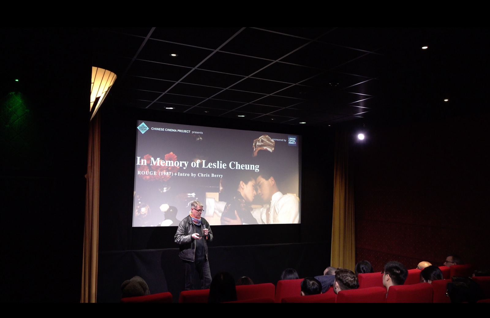

In Memory of Leslie Cheung

On April 1st, 2024, a special screening was held at the Garden Cinema in central London to honor the memory of legendary Hong Kong actor and singer Leslie Cheung. Co-curated by Meixuan Yi and Millie Zhou, curator at the Garden Cinema, the event was a heartfelt tribute to Cheung’s enduring legacy in Asian cinema.
The featured film was Rouge (1988), directed by Stanley Kwan and starring Leslie Cheung alongside Anita Mui. A hauntingly poetic tale of love and loss, the film served as a poignant reminder of Cheung’s unparalleled screen presence and emotional depth.
Before the screening, Professor Chris Berry—renowned scholar in Film Studies at King’s College London—delivered an insightful introduction. He reflected on Leslie Cheung’s cinematic journey, his impact on queer representation in Asian film, and his timeless influence on generations of audiences and filmmakers alike.
The evening was filled with emotion and reverence, drawing cinephiles from various backgrounds who gathered not only to revisit a Hong Kong classic, but also to collectively remember and celebrate a beloved icon.
Rouge Screening